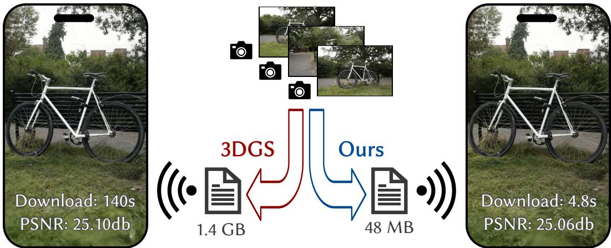
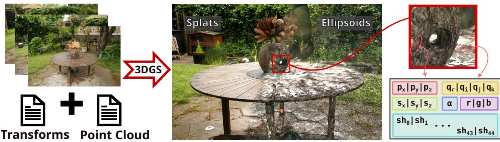
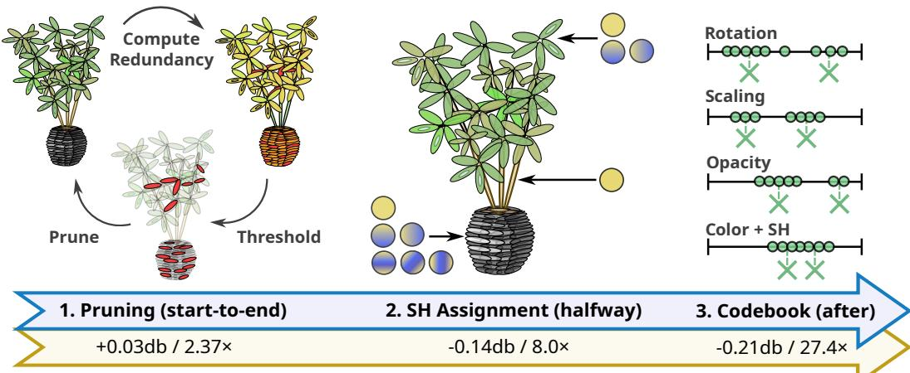
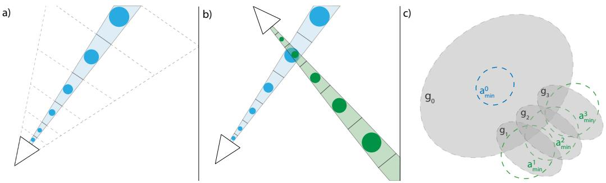
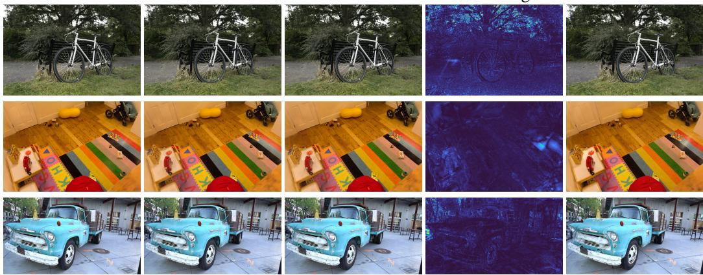
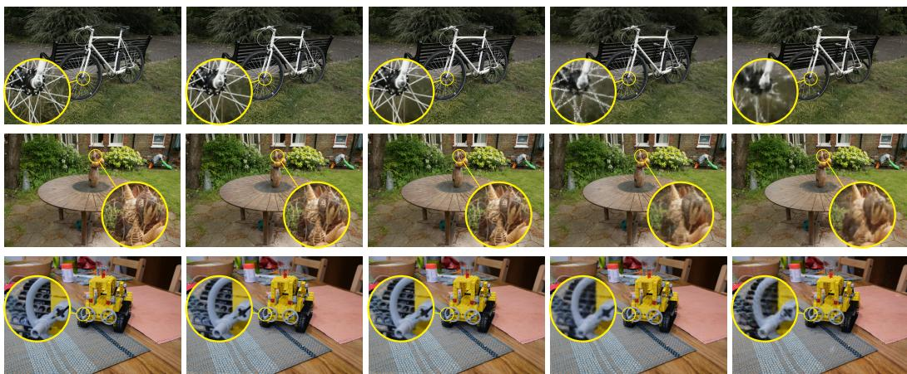

Reducing the Memory Footprint of 3D Gaussian Splating
PANAGIOTIS PAPANTONAKIS, Inria, Université Côte d’Azur, France GEORGIOS KOPANAS, Inria, Université Côte d’Azur, France BERNHARD KERBL, Inria, Université Côte d’Azur, France and TU Wien, Austria ALEXANDRE LANVIN, Inria, Université Côte d’Azur, France GEORGE DRETTAKIS, Inria, Université Côte d’Azur, France

Fig. 1. Left: screenshot from a phone running a modified gsplat.js for the bicycle scene. Right: same scene, processed with our method, reaching a significantly lower memory footprint and shorter download time.
3D Gaussian splatting provides excellent visual quality for novel view synthesis, with fast training and real time rendering; unfortunately, the memory requirements of this method for storing and transmission are unreasonably high. We first analyze the reasons for this, identifying three main areas where storage can be reduced: the number of 3D Gaussian primitives used to represent a scene, the number of coeficients for the spherical harmonics used to represent directional radiance, and the precision required to store Gaussian primitive attributes. We present a solution to each of these issues. First, we propose an eficient, resolutionaware primitive pruning approach, reducing the primitive count by half. Second, we introduce an adaptive adjustment method to choose the number of coeficients used to represent directional radiance for each Gaussian primitive, and finally a codebook-based quantization method, together with a half-float representation for further memory reduction. Taken together, these three components result in a ×27 reduction in overall size on disk on the standard datasets we tested, along with a ×1.7 speedup in rendering speed. We demonstrate our method on standard datasets and show how our solution results in significantly reduced download times when using the method on a mobile device (see Fig. 1).
Authors’ addresses: Panagiotis Papantonakis, panagiotis.papantonakis@inria.fr, Inria, Université Côte d’Azur, France; Georgios Kopanas, george.kopanas@gmail.com, Inria, Université Côte d’Azur, France; Bernhard Kerbl, kerbl@cg.tuwien.ac.at, Inria, Université Côte d’Azur, France and TU Wien, Austria; Alexandre Lanvin, Alexandre.Lanvin@inria.fr, Inria, Université Côte d’Azur, France; George Drettakis, George.Drettakis@inria.fr, Inria, Université Côte d’Azur, France.
CCS Concepts: • Computing methodologies → Rendering; Image-based rendering.
Additional Key Words and Phrases: novel view synthesis, radiance fields, 3D gaussian splatting, memory reduction
ACM Reference Format:
Panagiotis Papantonakis, Georgios Kopanas, Bernhard Kerbl, Alexandre Lanvin, and George Drettakis. 2024. Reducing the Memory Footprint of 3D Gaussian Splatting. Proc. ACM Comput. Graph. Interact. Tech. 7, 1, Article 16 (May 2024), 17 pages. https://doi.org/10.1145/3651282
1 INTRODUCTION
Novel view synthesis (NVS), i.e., generating new 3D views of a scene captured with photographs or video, has seen impressive progress over the last 25 years, ever since the first work on light fields and view-dependent texturing [Debevec et al. 2023; Levoy and Hanrahan 1996]. Traditional image-based rendering [Buehler et al. 2001; Shum et al. 2008] progressively adopted deep learning [Hedman et al. 2018; Riegler and Koltun 2020], and in recent years led to neural rendering [Tewari et al. 2022; Xie et al. 2022] that has dominated the field. Previous methods provide diferent tradeofs between speed, visual quality, and memory, usually sacrificing at least one; we present a memory-eficient approach based on 3D Gaussian Splatting (3DGS) that results in an NVS method that excels in all three criteria.
Neural Radiance Fields (NeRFs) [Barron et al. 2022; Mildenhall et al. 2020] introduced a new implicit scene representation based on a Multi-Layer Peceptron (MLP), that encodes volumetric density as a proxy for geometry and directional radiance. Rendering is performed with ray-marching. This solution provided unprecedented visual quality for NVS, but came at the cost of very expensive optimization to train the MLP, and slow rendering times. Several methods accelerated training and rendering, typically using spatial data structures (e.g., [Fridovich-Keil and Yu et al. 2022; Sun et al. 2022]) or encodings such as hashing [Müller et al. 2022], but sacrificed visual quality. More recently 3DGS proposed an explicit representation using 3D Gaussian primitives in space, each carrying a set of attributes such as position, covariance (anisotropic scale and rotation), opacity, and Spherical Harmonic (SH) coeficients to represent directional radiance. 3DGS combines the performance benefits of all previous methods: fast training, high visual quality, and is the first to provide real-time rendering speed without quality degradation. However, the original method results in a representation with an unreasonably high memory footprint (700Mb-1.2Gb for the scenes presented). This memory footprint is problematic for storage and processing, and also prohibitive for streaming to mobile devices.
The original 3DGS method starts with a sparse set of 3D primitives and progressively densifies based on gradients. This is an efective strategy, but is wasteful. Similarly, the approach uses three SH bands for all primitives in the scene, even in cases where there are no view-dependent efects, where a single color value would sufice. Finally, most primitive attributes do not require very high accuracy or dynamic range, making them amenable to quantization.
We first analyze these three aspects, i.e., number of primitives, SH band utility, and quantization, and propose a complete and efective solution. To reduce the number of primitives, we extend the existing pruning scheme by developing a resolution-aware redundancy score using an eficient two-step algorithm that is used to eliminate approximately 60% of the primitives compared to the baseline. We introduce an adaptive adjustment method for SH bands, where we reduce the number of bands for each primitive during training. We do this with a combination of contribution estimation and multi-view consistency evaluation to identify primitives without view-dependent appearance. Finally, we present a codebook quantization approach for some attributes and use half-floats to further reduce the stored size of the representation. Taken together, these three steps reduce the size of the 3DGS representation by 27×, resulting in a 1.7× increase in rendering speed. In summary, we present three main contributions:
• An eficient, resolution-aware primitive pruning approach, that reduces unnecessary points during optimization, leading to a total reduction of the primitive count by 60%.
• An adaptive adjustment method to choose the number of SH bands required for each 3DGS primitive, significantly reducing overall memory footprint.
• A codebook-based quantization method, together with a half-float representation for more eficient storage of the representation, resulting in further memory reduction.
Even though our ultimate goal is to reduce the final, stored size of the representation, depending on the implementation, the resulting 3DGS model can have significantly reduced memory requirements at inference-time rendering. We present a complete evaluation of the standard set of datasets used in 3DGS [Kerbl et al. 2023], showing the efect on memory reduction and rendering speed across diferent scene types. We also present an implementation of our method in a WebGL framework [Ebert [n. d.]] that demonstrates 20–30 times faster downloads on a mobile phone.
2 RELATED WORK
Research in Novel View Synthesis (NVS) from an unstructured set of input photographs has seen an explosion in recent years [Tewari et al. 2022]. Throughout the various available solutions, we observe diferent compromises between quality, speed, and memory footprint. In this section we briefly review the evolution of NVS algorithms, starting with Image-Based Rendering (IBR), all the way to the most recent real-time radiance field methods.
IBR algorithms typically use a geometry proxy, usually a triangle mesh, to re-project information stored in the input views to the novel view. Popular implementations [Bonopera et al. 2020] of the Unstructured Lumigraph Rendering [Buehler et al. 2001] use Multi-View Stereo to create the proxy geometry, reproject the RGB colors of the input views to the novel view and blend them using handcrafted heuristics to render [Chaurasia et al. 2013; Eisemann et al. 2008]. Such heuristics were later replaced by deep learning methods trained on multi-view datasets [Hedman et al. 2018]. These techniques achieve satisfactory display speed but are prone to artifacts generated by reconstruction errors in the proxy geometry. Regarding memory, these methods need to store all input images on the GPU: this does not scale well as the complexity of the scene increases and we need more input views to represent it.
Recently, Neural Radiance Fields (NeRFs) [Mildenhall et al. 2020] introduced a diferentiable volumetric representation for NVS. The diferentiable nature ofthe representation allows to optimize the properties of the scene with Stochastic Gradient Descent (SGD) to fit the input images. In the original paper, the scene is represented by a very compact, but slow Multi-Layer Perceptron (MLP). The MLP is an implicit representation, encoding radiance and density as a proxy for geometry; it is rendered with ray-marching, which requires the evaluation of the MLP at each sample. Even for small scenes, using the MLP results in optimization (“training") times that take days and rendering that requires minutes per frame. Several improvements followed [Barron et al. 2021, 2022], but the underlying complexity remained. On the other hand, MLPs are an extremely compact representation that only needs a handful of megabytes (MB) of memory to enable rendering in high quality.
To improve on speed, both in terms of rendering and training, some methods [Sun et al. 2022] store the scene representation in a voxel grid, often paired with a shallow MLP [Müller et al. 2022] to decode latent features to density and color. To deal with the cubic memory complexity of voxel grids, various methods suggest sparse structures [Fridovich-Keil and Yu et al. 2022; Liu et al. 2020; Yu et al. 2021] or compression schemes using hash functions [Müller et al. 2022] and tensor decompositions [Chen et al. 2022]. As a noteworthy example, Zip-NeRF [Barron et al.
2023] combines the benefits of discrete hash-based representations [Müller et al. 2022] with the anti-aliasing properties of MipNerf360 [Barron et al. 2022]. MeRF [Reiser et al. 2023] combines a low-resolution voxel grid and a tri-plane decomposition to achieve memory footprint compression of voxel-based representations in unbounded scenes. Shell-based methods [Wang et al. 2023] and adaptive surfaceness [Turki et al. 2023] recently helped to accelerate rendering speed by using fewer samples per ray, but still sufer from limitations in quality and speed. In all these cases, there is a significant trade-of between quality, speed, and memory consumption. When the extent of the scenes is relatively large, i.e., the MipNeRF360 dataset [Barron et al. 2022], this becomes more apparent: for a given memory footprint, the quality of grid-based solutions quickly deteriorates as the scene grows. The interplay between speed, quality, and memory consumption in real-world scenes is analyzed and presented in Sec. 6.2.
When real-world scenes are represented as a volumetric voxel grid, most of the space remains unoccupied. Many previous techniques use data structures or algorithms to skip empty space: Instant-NGP [Müller et al. 2022] uses an occupancy grid during traversal, while Plenoctrees [Yu et al. 2021] prune an octree to remove nodes that represent empty space. In contrast, 3D Gaussian Splatting (3DGS) [Kerbl et al. 2023] is an inherently sparse representation for radiance fields, allowing the gradual formation of anisotropic 3D Gaussians—i.e., volumetric primitives in space amenable to rasterization—thus naturally omitting empty space. The primitive-based nature of 3DGS avoids the cubic complexity of voxel-based implicit radiance field representations, while achieving quality that is usually on par (and sometimes surpasses) high-quality methods (e.g., MipNeRF360 [Barron et al. 2022]). Most importantly, 3DGS achieves unprecedented rendering speeds of 100+ frames per second (FPS) at this quality. However, in the original paper, the memory footprint of the 3DGS representation is significantly higher than previous methods. In this paper, we identify and address the factors that make 3DGS use excessive amounts of memory.
In unpublished, concurrent work (preprints), significant improvements have been made for voxel-based representations [Duckworth et al. 2023]. Similarly, several such preprints propose methods to compress the 3DGS representation [Fan et al. 2023; Girish et al. 2023; Lee et al. 2023; Navaneet et al. 2023], by at least an order of magnitude. These works explore similar solutions to ours, but either focus on a single way to compress the scene [Navaneet et al. 2023] or do not cull redundant Gaussians as we do [Girish et al. 2023]. The method closest to ours [Fan et al. 2023] achieves 37% lower compression than ours, with similar quality reduction. We provide a detailed comparison to concurrent work in the Appendix. Outside academia, 3DGS has attracted the interest of practitioners, who have explored the potential to compress a 3DGS scene with hardware-accelerated texture compression of GPUs [Pranckevicius [n. d.]], which can be seen as a hardware-oriented alternative to our codebook compression.
3 ANALYZING 3DGS MEMORY USAGE
Our goal is to significantly reduce the memory footprint of 3DGS, bringing it to the level of the most compact radiance field representation, while maintaining the speed and quality advantages of the initial method. To do this, we first analyze the memory footprint of the model and the various parameters that afect memory usage. We start with a brief review of 3DGS, focusing on the parts that related to storage.
3DGS models a scene as a set of 3D Gaussian primitives (which we represent as ellipsoids, see Fig. 2, right), each centered at a given point. Each primitive has a set of attributes, namely opacity (used for alpha-blending), covariance (i.e., anisotropic scale and rotation), and spherical harmonics (SH) to represent difuse directional radiance. The technique is usually initialized with the point cloud produced by the camera calibration algorithm. This initial point cloud is far too sparse for novel view synthesis; consequently, 3DGS optimization includes a method for adaptive control of the number of Gaussians. In areas that are initially empty or missing details, the 3D Gaussians are densified by adding more primitives. A simple measure is used to control densification, namely the magnitude of the gradient of primitive positions: where the gradient is large, primitives are added. In addition, primitives that have low opacity (and thus do not contribute in the rendering), or primitives with a very large world space size, are regularly culled.

Fig. 2. 3DGS produces photo-realistic renderings from input views and sparse points. Rendering the Gaussians as ellipsoids instead of splats reveals that each scene is modeled by millions of primitives. Each primitive stores a significant amount of information: position μ, rotation quaternion q, scale s, opacity α, color, and 3 bands of spherical harmonics. This leads to the exceedingly high memory consumption of 3DGS scenes.
We first analyze the resulting representation, observing that in many cases, 3DGS creates unnecessarily dense sets of primitives. An ideal densification strategy would avoid this in the first place; however, reliably identifying the density of primitives required is hard since it would amount to knowing the solution to the optimization problem beforehand. Consequently, we address the issue of excessive primitive density by determining which primitives are redundant; as we show later, this is strongly dependent on the scale and resolution of the observed details.
The memory footprint of the attributes for a given 3DGS primitive is as follows: position, scale, and color (3 floats each), rotation (4 floats for a quaternion), opacity (1 float), and the SH coeficients. This leads to a primitive structure of floats, where l = 0, 1, 2, . . . is the number of SH bands. When using 3 bands as in the original paper, each primitive requires 59 floats of storage, of which 45 (or 76%) are used by SH to model view-dependent efects.
Our second observation is that this results in wasteful memory utilization, as most parts of the scenes include entirely or mostly difuse materials, which can in principle be modeled well with just the base (RGB) color. In many cases, SH is used to represent view-dependent material appearance. It is however important to note that view-dependent efects in 3DGS and similar methods can also be modeled by combinations of several primitives. A typical case is the “reflected geometry” that such methods create behind a reflective surface, used to model moving highlights or reflections. We introduce a new approach that uses a variable number of spherical harmonics bands, enabling them only when they are actually required, thus allocating memory where it is really needed.
Our third observation relates to the efective dynamic range and required accuracy of many of the primitive attributes. Notably, opacity, scale, rotation, and the SH coeficients do not require very high dynamic range, nor are they very sensitive to small inaccuracies. We will exploit this fact to introduce a post-processing step that further compresses the representation, using a clusteringbased codebook approach. In contrast, reducing the accuracy of the positions of the primitives in a similar fashion leads to a significant degradation in quality.
These three observations lead us to the memory reduction methods we present next.
4 MEMORY REDUCTION FOR 3DGS
Based on the analysis presented above, we first present a method to identify redundant primitives and prune them during optimization. Next, we introduce a method allowing a variable number of SH bands for each primitive, and finally, a codebook compression method that performs quantization as post-processing for attributes that do not require high accuracy. An overview of our method is illustrated in Fig. 3.

Fig. 3. Left: During training, every 1000 iterations our method evaluates a redundancy score in space, which is then projected to the primitives. Redundant primitives are then culled. Middle: At 15K iterations when densification stops, our method analyzes the SH coeficients to determine which primitives can be represented with 0 (just RGB) 1, 2, or 3 SH bands, which allows us to omit storing unnecessary SH coeficients. Right: Finally, at the end of the training, we perform a codebook quantization of the remaining values, except for primitive positions. The relative reduction of each stage is shown in the figure, for a total of 27 times reduction in memory with 0.21 db PSNR drop on average over all our datasets.
4.1 Scale- and Resolution-aware Redundant Primitive Removal
During optimization, the original 3DGS approach regularly culls primitives that fall below a specified opacity threshold, as they contribute little to the final image. To limit the number of primitives, a straightforward solution would be to amplify this policy and simply remove low-opacity primitives more aggressively, e.g., by erasing a specified percentage each time. Doing so can already limit the final number of primitives, and hence the memory footprint of the representation. However, as we have observed, 3DGS’ adaptive densification can lead to regions with an exorbitantly high number of Gaussians. Therefore, we propose to estimate this spatial redundancy and combine this information with low-opacity filtering to achieve a highly efective culling strategy.
The goal of our method is to first identify regions in space that have redundant primitives. In essence, we are searching for regions where a large number of primitives exist, but here each of these primitives contributes little to the resulting rendered image. To make this decision for each Gaussian primitive g in space, we find the number of other primitives overlapping a spherical region around g. To choose the sphere size, we take the world space footprint of pixels that observe g into account. For a given view v, the pixel footprint at � identifies the world-space extent of a pixel projected to depth as seen from v (see Fig. 4(a,b)). Ideally, a 3D region around g of that extent should be occupied by a low number of primitives; densely-packed clusters of Gaussians in that region would surpass the amount of detail that can be distinguished from

Fig. 4. Our resolution and scale-aware redundancy metric measures how necessary a Gaussian is to represent the scene. a) Each camera can capture details of specific resolution, the further we move away from the camera, the smaller the spatial resolution this camera can represent. b) Given multiple cameras for a given primitive in the scene, multiple resolutions can be represented. c) For each Gaussian , we consider the highest resolution given the input cameras. We count the number of Gaussians that intersect this region. Then we prune the Gaussians that intersect with regions that are influenced by more than K other Gaussians. In this example, Gaussian g0 will not be pruned because there is at least one region, influenced by no other Gaussian. While Gaussian intersects with regions . All these regions have many Gaussians influencing them, hence g2 is a good candidate for pruning.
The sphere extent is chosen based on the pixel footprint of the closest view in which g is visible (i.e., inside the camera frustum). The closest view corresponds to the smallest pixel footprint at �, which yields a spatial extent proportional to the smallest observable detail around g from any view (Fig. 4(c)). This choice makes the redundancy test conservative, i.e., we tend to underestimate redundancy for most views. In practice, this means that our criterion is consistent with all novel views that observe a region at a smaller resolution (e.g. they are further away), hence avoiding any visual degradation compared to the baseline. For novel views that observe the region at a higher resolution, our method retains the same level of information as the original solution. This could be seen as taking the camera which determines the maximal sampling rate of the primitive, following the terminology described in [Yu et al. 2024]. We then find the number of other Gaussian primitives intersecting a sphere around g with a radius equal to , i.e., half the diagonal of a cube where each face has area . For the purpose of this intersection test, each Gaussian is represented by an ellipsoid with its center at the Gaussian’s mean and axis lengths/orientation corresponding to the Gaussian’s scale/rotation, as defined by 3DGS.
Naïvely computing the above redundancy score is prohibitively expensive for millions of Gaussians. To limit the number of intersection tests, we first apply a k-NN search with a high number of neighbors (30) on the set of primitives to find candidate intersecting primitives. In addition, we approximate the sphere-ellipsoid intersection test by scaling the ellipsoids’ axes by the sphere radius and performing an ellipsoid-point intersection test, which is just a dot product. We count the number of primitives that pass the intersection test, yielding the spatial redundancy value for the spherical region centered around each Gaussian.
Counting the number of intersections can be seen as sampling a spatial redundancy score field at points of interest; rather than sampling the field uniformly, we use the Gaussians’ centers as sample locations and then propagate the scores computed at these locations to close-by primitives. To ensure that our approach remains conservative, propagation of the redundancy score to a primitive is done by choosing the smallest score from all spherical regions where each ellipsoid intersects. The motivation for this is straightforward: if a Gaussian overlaps a region that is not redundantly populated, it may contribute crucial detail there, which should be reflected by a low redundancy score. We do this by keeping a mask of the intersection tests from the first step and taking the minimum value from the regions intersected, for every primitive.
Each primitive now has an assigned redundancy score; We sort our primitives based on their score and filter those whose score is greater than an adaptive threshold . Here, and σ are the mean and standard deviation of the redundancy score for all primitives. Efectively, this adaptive threshold prunes Gaussians whose redundancy score is more than standard deviations away from the mean. We use in all our experiments.
Since the redundancy score of each primitive is not independent of other primitives, deleting all filtered primitives with values greater than could lead to excessive primitive culling in some regions. Instead, we delete 50% of filtered primitives. We choose primitives to delete based on low opacity, as opacity is an objective/independent estimator of the Gaussian’s contribution to the visual result; culling primitives with low opacity has little impact on image quality.
We found that culling primitives with a redundancy score less than 3—i.e., a primitive contributes to at least one region where it coincides with just two other primitives—adversely afects quality. We thus modify to be . In practice, this means that we do not delete primitives with a redundancy score lower than 4, since scores are integers.
We also modify the loss during training by adding an sparsity term on opacity to encourage opacity values to be as low as possible. This helps to encourage the creation of lower-contribution primitives and is particularly efective when we cull the bottom 50% of redundant candidate primitives. The culling process is applied every 1000 iterations during optimization.
The results of this process are evaluated in detail in Sec. 6.2; Interestingly, simple low-opacity culling gives results close to those achieved by redundancy culling. However, the performance of each is diferent depending on the dataset tested. Instead, we combine both, which results in consistently better performance in all cases, with around 60% of the primitives being culled, and minimal efect on visual quality. For the simple low-opacity portion, we remove 3% of lowest opacity primitives each time, with a maximum opacity threshold of 0.05, as removing primitives with larger opacity values degraded the quality.
4.2 Adaptive Adjustment of Spherical Harmonics Bands
At a high level, spherical harmonics help represent parts of the scene with view-dependent efects, such as glossy/specular highlights, even though they also provide additional flexibility in the optimization. As discussed previously, the SH coeficients represent the majority of the memory footprint of the 3D Gaussians.
Our motivation is thus to only use as many SH bands as are required by a given Gaussian primitive; in many cases, a single RGB color value may sufice. To find the appropriate representation, we use a purely numerical metric to determine if a lower-order SH is suficient to represent the radiance of the primitive. We do this by evaluating the SH function from all input views; This operation determines whether the primitive needs to represent view-dependent efects, i.e., if the fully-evaluated color changes significantly between views. We then use this information to cull SH bands following two approaches. The first is based on the observation that a primitive that receives the same color from all input views does not need view-dependent efects; the second is that if the color of a primitive does not change much when evaluated with fewer, lower band SH coeficients, the higher-order ones can be ignored.
Concretely, for the first approach, we determine if the evaluated color of a primitive from all viewpoints has low variance. If this is the case, the Gaussian can be modeled with just a RGB color band), and does not need to represent view-dependent appearance (higher bands). Specifically, for every viewpoint, we calculate the per-channel average and standard deviation of the color for each primitive, weighted by average transmittance:
where V is the number of views containing the primitive, is the average transmittance of the primitive on the pixels splatted by view v, given by:
where P is the number of pixels that the primitive is splatted to in view v, and is the transmittance of the primitive for a specific pixel k. We then replace the RGB color of all primitives that have a lower than a threshold with the average color and disable all of their higher-order SH bands. is a hyperparameter that we set to 0.04 in all our experiments.
For the second approach, we identify primitives for which dropping the higher-order SH bands creates only a minor change in their evaluated color across all views. In these cases, the color computation can use the smaller number of bands and ignore the SH coeficients belonging to the higher bands. For every viewpoint, we evaluate the color using only the SH coeficients belonging to the first l SH bands for each primitive, resulting in colors with Then, we calculate the Euclidean distance between the full color and the remaining three, resulting in three color distances . Finally, we take the average of each distance value across all views, weighted by average transmittance. We finally choose the lowest band l for which is below a threshold and remove the remaining higher bands; is a hyperparameter, set to 0.04. After applying these steps, some primitives maintain all initial bands, while most end up with 2 or fewer SH bands, removing the need to store respective, higher-order SH coeficients. For our main model, the point distribution over bands was 89%, 0.1%, 2.7%, 8.2% for 0, 1, 2, 3 bands respectively.
Disabling SH bands as described can result in a small quality degradation; to mitigate this efect, we apply the SH culling once at the halfway point of 3DGS training (15K iterations, i.e., when densification stops) and allow the remaining optimization steps to compensate for the adjustment. To complement our band reduction procedure, we again modify the original 3DGS optimization by introducing a sparsity loss on SH coeficients. Doing so discourages the use of higher bands, except where absolutely necessary. As a result, disabling higher bands has a lower chance of adversely impacting image quality.
We evaluate the efects of primitive reduction and adaptive SH adjustments in Sec. 6.2; Taken together, after both processes have been applied, the memory reduction is approximately 87%.
4.3 Quantization of the Final Representation
We now exploit our third observation (Sec. 3), that only limited dynamic range and precision need to be stored for most primitive attributes.
We create a codebook using K-means clustering, i.e., instead of storing the exact value of a property for every primitive, we store an index to the closest value in a fixed-size codebook. For vector attributes (e.g., scale), we maintain one shared codebook, but treat the three scalar components separately, leading to one index per component. Our experiments show that 1-byte indices allow maximum compression with minimal quality degradation, and thus a codebook size of 256 entries. E.g., if the initial cost for storing N Gaussian scales (3D vectors containing floats) is 33N × 4 bytes, the cost becomes bytes, including the size of the shared codebook.
We create the following codebooks for Gaussian primitive attributes: one for opacity, one for the three scaling components, one for the real part and one for the imaginary components of quaternion rotation, one for the coeficients of the base color, and one per 3-channel color component for each of the 15 SH coeficient groups. Hence, with this procedure, we reduce the required memory for these attributes from 56� × 4 bytes to bytes. Since N is a number in the hundreds of thousands or even millions, the second, constant term that represents the overhead for the codebooks is negligible.
Finally, we found that applying 16-bit half-float quantization to the remaining, uncompressed floating point values (i.e., position and codebook entries), does not significantly afect the quality. Thus, we also employ this quantization to reduce our memory requirements even further. In total, the average reduction in memory is 96.3%, or almost 27× compared to the original 3DGS file size. Again, we analyze the efect of each of our decisions in Sec. 6.2.
5 IMPLEMENTATION
We implemented our method on top of the original, open-source 3DGS implementation. We will release the source code of our own implementation1 upon acceptance.
We modified the original method’s simple CUDA k-NN routine to enable the identification of the nearest neighbor primitive IDs. In contrast to the original approach, we continue culling low-opacity Gaussians (opacity < 1255 ) after the 15K iteration mark, since they are neither rendered nor optimized and thus provide no contribution to image quality.
To incorporate the variable number of SH coeficients with minimal changes to the file format, in practice, we store 4 sets of primitives, one for each number of SH bands (0, 1, 2, and 3). This has minimal efect on the parsing of the file.
Although the resolution-aware primitive pruning method and the adaptive adjustment for the SH bands occur during training and afect GPU memory usage, their efect becomes relevant after the point of peak usage, so the memory requirements of training remain unaltered. During rendering, the model benefits from the reduced memory footprint caused by the smaller number of Gaussians and fewer dynamic SH bands. Fetching a variable number of SH coeficients requires only minor modifications to the program logic, which incur no discernible slowdown.
We assess the efectiveness of our method in terms of its impact on file size. In particular, one of the most useful applications is streaming 3DGS representations over the network. To showcase the benefits of our compression in a real-world use case, we have extended the open-source WebGL implementation of [Ebert [n. d.]] to incorporate our modified representation. The original codebase did not include SH coeficient evaluation; we added it to visually reproduce the original 3DGS results and added display of our adaptive SH coeficient representation. We show results in Sec. 6.1 and in the supplemental video. In our current implementation, the quantized representation is decompressed at parsing time rather than on-the-fly. Furthermore, we do not yet employ codebooks during rendering. As demonstrated by concurrent work [Niedermayr et al. 2023], we expect that integrating these directly into the rendering pipeline would lead to even higher frame rates due to reduced memory trafic.
6 RESULTS AND EVALUATION
We present extensive results and evaluation of our methods on the standard set of scenes used in the original 3DGS paper [Kerbl et al. 2023], namely the full MipNeRF360 [Barron et al. 2022] dataset, two scenes from Deep Blending [Hedman et al. 2018] and two from Tanks&Temples [Knapitsch et al. 2017]. All results were obtained using an NVIDIA RTX A6000 GPU, running on Linux. Please note that the FPS measurements of 3DGS variants on our system isolate the runtime of the CUDA rasterizer routine only, thus focussing on the speedup of image synthesis itself, excluding any graphics API overheads such as blitting or swapchain presentation.
6.1 Results
In Tab. 1, we show the efectiveness of our solution. Our primitive reduction reduces the memory footprint to between 32% to 52% of the original method 2. The average impact on PSNR is minimal, between -.32 and +.16 dB, that has minimal efect on visual quality. The reason why we not only see minimal degradation in the visual quality but in some cases improvements is that the primitive and SH culling can also act as a regularization strategy, forcing the optimization to find solutions that generalize better. We show that each one of our main contributions—the primitive and SH culling, and the quantization—are all contributing significantly and comparably to compressing the 3DGS representation. Each one of these elements approximately cuts down the size of the representation 3× to result in an average of 27× reduction in size across all datasets used in 3DGS [Kerbl et al. 2023]. We note that integrating codebooks and half-float type handling into the renderer would enable the same reduction for a scene’s VRAM consumption as for its required disk storage.
Table 1. We show the efect of each component of our method as we add them progressively. From top to botom, we show the efect of the reduction of the number of primitives, adaptive SH adjustment, and quantization. In each case, we show the efect on the three test datasets, in terms of SSIM, PSNR, LPIPS, total memory size, and memory reduction.
| Dataset Method/Metric | Mip-NeRF360 SSIM↑ PSNR{LPIPS↓ Mem (×Gain) | Tanks&Temples SSIM↑ PSNR↑ LPIPS↓ Mem (×Gain) | Deep Blending | |||||||||
| SSIM↑ PSNR↑LPIPS↓ Mem (×Gain) | ||||||||||||
| Baseline | 0.813 | 27.42 | 0.217 | 744MB (×1.0) | 0.844 | 23.66 | 0.178 | 412MB (×1.0) | 0.899 | 29.47 | 0.247 | 630MB (×1.0) |
| +Point Culling | 0.814 | 27.43 | 0.220 | 339MB (×2.2) | 0.844 | 23.69 0.182 | 154MB (×2.6) | 0.902 | 29.57 | 0.247 | 224MB (×2.9) | |
| +SH Culling | 0.811 | 27.18 | 0.225 | 102MB (×7.5) | 0.841 | 23.62 0.187 | 49MB (×8.0) | 0.903 | 29.67 | 0.248 | 62MB (×10.3) | |
| +Quantisation | 0.809 | 27.10 | 0.226 | 29MB (×25.7) | 0.840 | 23.57 | 0.188 | 14MB (×27.6) | 0.902 | 29.63 | 0.249 | 18MB (×34.8) |
A
B
Ours
Error Image
Baseline

Fig. 5. From Left to Right: Primitive Reduction only (A), Primitive Reduction and Adaptive SH (B), full method, error image between ours and baseline, and the baseline (original 3DGS). We show the scenes: Bicycle from MipNeRF360, Playroom from Deep Blending, and Truck from Tanks&Temples.
This makes 3DGS representations more practical for applications, by making streaming assets through the web faster and loading them quicker. Our modifications incur a virtually imperceptible degradation in visual quality, especially for smaller displays. In Fig. 5, we show the visual efect of each step for three scenes, one from each tested dataset. We show a test input view to allow comparison with ground truth. In print, the diference is invisible; the visual quality degradation is minimal, even when viewed on a computer screen. This is in contrast to other state-of-the-art real-time methods, where quality diferences are more apparent. See Fig. 6 for an illustration.
Ground Truth
3DGS
Ours
INGP
MeRF

Fig. 6. Visual comparison between INGP, MeRF, 3DGS and ours.
We also show screenshots from our WebGL application on a phone in the supplemental video. The initial loading time for the full 3DGS scene on our local wifi network was 120sec, displaying at 16FPS, while using our method, the download time is only 5sec and 45FPS; a ×24 speedup in download time.
6.2 Evaluation
We compare our proposed method to previous solutions. In Tab. 2, we reproduce the results from the original 3DGS paper and have added four rows: one for the recently published MeRF method, one for 3DGS* corresponding to the runs with the public codebase (see previous footnote) and Our full solution, as well as the low- and high-compression variants. We show results for 3DGS-based methods after 30K training iterations. To illustrate the possible tradeofs for diferent target use cases, we also include two variants with slightly diferent configurations, achieving diferent degrees of compression: "Low" and "High". These variants use parameters and 0.06, , respectively. Furthermore, the minimum redundancy score to be considered for culling is set to 2 for the high-compression variant. We see that our proposed method and its variants are competitive in memory compared to INGP and even MipNerf360, but maintain the advantages of 3DGS w.r.t. speed and quality, including for training time.
We next perform a set of ablation studies to analyze the efect of our choices on memory and quality. We investigate the efect of various parameters, in particular culling based solely on opacity vs. using our redundancy metric and selecting high-scoring candidates either with low opacity or at random. The results are summarized in Tab. 3. While both opacity culling and redundancy reduction have comparable efects, they identify and cull diferent sets of primitives. By combining the two policies, we get the highest reduction while maintaining robust quality metrics. Tab. 4 quantifies the impact of our quantization from full 32-bit floats to half floats. Again, the impact is minor when compared to the significant reduction in required file size.
Table 2. Quantitative comparison of relevant methods; the first part of the table is taken from Table 1 of the 3DGS publication. Results are computed over three representative datasets. Our method achieves the best compromise between size, speed, and quality. M-NeRF360 is consistently the smallest but trains for days and needs minutes to render, while INGP has significantly lower quality and rendering speed, for only a margina gain in storage. Red is the best method, then orange, then yellow; the same color code is used for all tables.
| Dataset Method/Metric | Mip-NeRF360 | Tanks&Temples | ||||||||||
| SSIM{ PSNR↑ LPIPSt Train | FPS (Time) | Mem | SSIM↑ PSNR{ LPIPS↓ Train | FPS (Time) | Mem | |||||||
| Plenoxels | 0.626 | 23.08 | 0.463 | 25m49s | 6.79 (147ms) | 2.1GB | 0.719 | 21.08 | 0.379 | 25m5s | 13.0 (77ms) | 2.3GB |
| INGP | 0.671 | 25.30 | 0.371 | 5m37s | 11.7 (85ms) | 13MB | 0.723 | 21.72 | 0.330 | 5m26s | 17.1 (58ms) | 13MB |
| M-NeRF360 | 0.792 | 27.69 | 0.237 | 48h | 0.06 (16.7s) | 8.6MB | 0.759 | 22.22 | 0.257 | 48h | 0.14(7.1s) | 8.6MB |
| MeRF | 0.722 | 25.24 | 0.311 | 162 (6.1ms) | 162MB | |||||||
| 3DGS | 0.815 | 27.21 | 0.214 | 41m33s | 134(7.5ms) | 734MB | 0.841 | 23.14 | 0.183 | 26m54s | 154 (6.5ms) | 411MB |
| 3DGS* | 0.813 | 27.42 | 0.217 | 31m16s | 178 (5.6ms) | 744MB | 0.844 | 23.66 | 0.178 | 17m47s | 227 (4.4ms) | 412MB |
| Ours | 0.809 | 27.10 | 0.226 | 25m27s | 284 (3.5ms) | 29MB | 0.840 | 23.57 | 0.188 | 14m0s | 433 (2.3ms) | 14MB |
| Low | 0.811 | 27.22 | 0.224 | 25m22s | 295 (3.4ms) | 46MB | 0.841 | 23.64 | 0.186 | 14m4s | 436 (2.3ms) | 21MB |
| High | 0.806 | 27.02 | 0.230 | 25m7s | 298 (3.3ms) | 23MB | 0.836 | 23.28 | 0.192 | 13m41s | 468 (2.1ms) | 10MB |
| Method/Metric | Deep Blending | ||||
| SSIM↑ PSNR↑LPIPS↓Train | FPS (Time) | Mem | |||
| Plenoxels | 0.795 | 23.06 | 0.510 | 27m49s 11.2 (89ms) | 2.7GB |
| INGP | 0.797 | 23.62 0.423 | 6m31s | 3.26 (307ms) | 13MB |
| M-NeRF360 | 0.901 | 29.40 0.245 | 48h | 0.09 (11.1s) | 8.6MB |
| MeRF | |||||
| 3DGS | 0.903 | 29.41 | 0.243 | 36m2s 137 (7.3ms) | 676MB |
| 3DGS* | 0.899 | 29.47 0.247 | 28m2s | 201 (5ms) | 630MB |
| Ours | 0.902 | 29.63 0.249 | 22m4s | 360 (2.8ms) | 18MB |
| Low | 0.903 | 29.74 | 0.248 21m59s | 371 (2.7ms) | 35MB |
| High | 0.902 | 29.56 | 0.251 | 21m31s 406 (2.5ms) | 13MB |
Table 3. Ablation on primitive culling approaches. We evaluate the efectiveness of our culling strategy against simpler baselines. First, we evaluate a straightforward culling approach that culls points with the lowest opacity across the scene (Opacity). Second, we compute candidates for pruning based on our spatial redundancy score (see Sec. 4.1) and whose opacity is in the lowest 50% (Redundancy). Third, we compute the same candidates but prune the 50% of the points at random (Redundancy Random) and finally, we evaluate our full method that combines Opacity (1st row) and Redundancy (2nd row). On average, the combination of the two methods achieves 9% higher reduction of points than the best-performing other method.
| Dataset Method/Metric | Mip-NeRF360 | Tanks&Temples | Deep Blending | ||||
| PSNR↑ | #Prim (%Base) | PSNR↑ | #Prim (%Base) | PSNR^↑ | #Prim (%Base) | ||
| Opacity | 27.16 | 1.64M (48%) | 23.52 | 0.93M | (50%) | 29.59 | 1.37M (48%) |
| Redundancy | 27.16 | 1.88M (56%) | 23.51 | 0.85M | (50%) | 29.57 | 1.30M (45%) |
| Redundancy Random | 27.16 | 1.91M (57%) | 23.55 | 0.87M | (51%) | 29.63 | 1.33M (46%) |
| Ours | 27.10 | 1.46M (43%) | 23.57 | 0.68M | (39%) | 29.63 | 1.01M (35%) |
Table 4. We show the efect of half-precision floats on the PSNR, Memory, and Position memory footprint fraction of total model memory. The drop in quality is limited to 0.07 dB, while the memory reduction is increased by at least 20%
| Dataset Method/Metric | PSNR↑ | Mip-NeRF360 Mem (× Gain) | Pos % | PSNR↑ | Tanks&Temples Mem (× Gain) | Pos % | PSNR↑ | Deep Blending Mem (× Gain) | Pos % | |||
| Baseline | 27.42 | 744MB | (×1.0) | 5% | 23.66 | 412MB | (×1.0) | 5% | 29.47 | 630MB | (×1.0) | 5% |
| K-means | 27.17 | 38MB | (×20.0) | 43% | 23.60 | 18MB | (×21.7) | 41% | 29.65 | 24MB | (×26.5) | 47% |
| +Half Floats | 27.10 | 29MB | (×25.7) | 28% | 23.57 | 14MB | (×27.6) | 26% | 29.63 | 18MB | (×34.8) | 31% |
In the Appendix, we provide additional comparisons with concurrent, unpublished work that also address compact 3DGS representation. Comparing with reported metrics for the (as of yet unpublished) techniques, we find that our method provides a superior quality/storage tradeof. We achieve the highest compression rates across all datasets with negligible diferences in quality. We often achieve higher compression rates and higher PSNR scores than the best competing methods at the same time. This is due to the fact that our compression uses both an efective quantization and an efective pruning technique of unused elements in its representation.
7 CONCLUSION
In this paper, we have presented a complete and eficient memory reduction method for 3DGS. We achieve this by introducing a resolution-aware primitive reduction method, reducing the number of primitives by half, an adaptive adjustment method to choose the appropriate number of SH bands required for each primitive, and a codebook-based quantization method.
Our method results in a ×27 reduction in memory with a ×1.7 increase in rendering speed. We demonstrate our results in the context of a streaming setup with a WebGL implementation for rendering, reducing download time 20-30 times and increasing rendering speed approximately 3 times. Ours is the first such streaming/mobile 3DGS solution that preserves high visual quality. Our memory reduction removes one significant limitation of 3DGS; Ours is thus the most competitive NVS method for all three criteria: speed, quality, and memory consumption.
In future work, it would be interesting to investigate how to further reduce the number of primitives required, and more importantly avoid the over-densification in the first place. Simple initial tests have shown that this is a very hard problem; one possible direction would be the use of data-driven priors, for example, supervision on depth [Chung et al. 2023].
ACKNOWLEDGMENTS
This research was funded by the ERC Advanced grant FUNGRAPH No 788065 (https://fungraph.inria.fr). The authors are grateful to Adobe for generous donations, NVIDIA for a hardware donation, and the OPAL infrastructure from Université Côte d’Azur.
REFERENCES
Jonathan T Barron, Ben Mildenhall, Matthew Tancik, Peter Hedman, Ricardo Martin-Brualla, and Pratul P Srinivasan. 2021. Mip-nerf: A multiscale representation for anti-aliasing neural radiance fields. In Proceedings ofthe IEEE/CVF International Conference on Computer Vision. 5855–5864.
Jonathan T. Barron, Ben Mildenhall, Dor Verbin, Pratul P. Srinivasan, and Peter Hedman. 2022. Mip-NeRF 360: Unbounded Anti-Aliased Neural Radiance Fields. CVPR (2022)
Jonathan T Barron, Ben Mildenhall, Dor Verbin, Pratul P Srinivasan, and Peter Hedman. 2023. Zip-NeRF: Anti-aliased grid-based neural radiance fields. arXiv preprint arXiv:2304.06706 (2023).
Sebastien Bonopera, Jerome Esnault, Siddhant Prakash, Simon Rodriguez, Theo Thonat, Mehdi Benadel, Gaurav Chaurasia, Julien Philip, and George Drettakis. 2020. sibr: A System for Image Based Rendering. https://gitlab.inria.fr/sibr/sibr_core
Chris Buehler, Michael Bosse, Leonard McMillan, Steven Gortler, and Michael Cohen. 2001. Unstructured lumigraph rendering. In Proc. SIGGRAPH.
Gaurav Chaurasia, Sylvain Duchene, Olga Sorkine-Hornung, and George Drettakis. 2013. Depth synthesis and local warps for plausible image-based navigation. ACM Transactions on Graphics (TOG) 32, 3 (2013), 1–12
Anpei Chen, Zexiang Xu, Andreas Geiger, Jingyi Yu, and Hao Su. 2022. TensoRF: Tensorial Radiance Fields. In European Conference on Computer Vision (ECCV).
Jaeyoung Chung, Jeongtaek Oh, and Kyoung Mu Lee. 2023. Depth-Regularized Optimization for 3D Gaussian Splatting in Few-Shot Images. arXiv preprint arXiv:2311.13398 (2023).
Paul E Debevec, Camillo J Taylor, and Jitendra Malik. 2023. Modeling and rendering architecture from photographs: A hybrid geometry-and image-based approach. In Seminal Graphics Papers: Pushing the Boundaries, Volume 2. 465–474.
Daniel Duckworth, Peter Hedman, Christian Reiser, Peter Zhizhin, Jean-François Thibert, Mario Lučić, Richard Szeliski, and Jonathan T Barron. 2023. SMERF: Streamable Memory Eficient Radiance Fields for Real-Time Large-Scene Exploration. arXiv preprint arXiv:2312.07541 (2023).
Dylan Ebert. [n. d.]. WebGL 3D Gaussian Splatting Viewer. https://huggingface.co/spaces/dylanebert/igf. Accessed: 2023-12-19.
Martin Eisemann, Bert De Decker, Marcus Magnor, Philippe Bekaert, Edilson De Aguiar, Naveed Ahmed, Christian Theobalt, and Anita Sellent. 2008. Floating textures. In Computer graphics forum, Vol. 27. Wiley Online Library, 409–418.
Zhiwen Fan, Kevin Wang, Kairun Wen, Zehao Zhu, Dejia Xu, and Zhangyang Wang. 2023. LightGaussian: Unbounded 3D Gaussian Compression with 15x Reduction and 200+ FPS. arXiv preprint arXiv:2311.17245 (2023).
Fridovich-Keil and Yu, Matthew Tancik, Qinhong Chen, Benjamin Recht, and Angjoo Kanazawa. 2022. Plenoxels: Radiance Fields without Neural Networks. In CVPR.
Sharath Girish, Kamal Gupta, and Abhinav Shrivastava. 2023. EAGLES: Eficient Accelerated 3D Gaussians with Lightweight EncodingS. arXiv preprint arXiv:2312.04564 (2023).
Peter Hedman, Julien Philip, True Price, Jan-Michael Frahm, George Drettakis, and Gabriel Brostow. 2018. Deep blending for free-viewpoint image-based rendering. ACM Trans. on Graphics (TOG) 37, 6 (2018).
Bernhard Kerbl, Georgios Kopanas, Thomas Leimkühler, and George Drettakis. 2023. 3D Gaussian Splatting for Real-Time Radiance Field Rendering. ACM Transactions on Graphics 42, 4 (July 2023). https://repo-sam.inria.fr/fungraph/3dgaussian-splatting/
Arno Knapitsch, Jaesik Park, Qian-Yi Zhou, and Vladlen Koltun. 2017. Tanks and temples: Benchmarking large-scale scene reconstruction. ACM Transactions on Graphics (ToG) 36, 4 (2017), 1–13.
Joo Chan Lee, Daniel Rho, Xiangyu Sun, Jong Hwan Ko, and Eunbyung Park. 2023. Compact 3D Gaussian Representation for Radiance Field. arXiv preprint arXiv:2311.13681 (2023).
Marc Levoy and Pat Hanrahan. 1996. Light field rendering. In Proceedings ofthe 23rd annual conference on Computer graphics and interactive techniques. 31–42.
Lingjie Liu, Jiatao Gu, Kyaw Zaw Lin, Tat-Seng Chua, and Christian Theobalt. 2020. Neural sparse voxel fields. Advances in Neural Information Processing Systems 33 (2020), 15651–15663.
Ben Mildenhall, Pratul P. Srinivasan, Matthew Tancik, Jonathan T. Barron, Ravi Ramamoorthi, and Ren Ng. 2020. NeRF: Representing Scenes as Neural Radiance Fields for View Synthesis. In ECCV.
Thomas Müller, Alex Evans, Christoph Schied, and Alexander Keller. 2022. Instant Neural Graphics Primitives with a Multiresolution Hash Encoding. ACM Trans. Graph. 41, 4, Article 102 (July 2022), 15 pages. https://doi.org/10.1145/ 3528223.3530127
KL Navaneet, Kossar Pourahmadi Meibodi, Soroush Abbasi Koohpayegani, and Hamed Pirsiavash. 2023. Compact3D: Compressing Gaussian Splat Radiance Field Models with Vector Quantization. arXiv preprint arXiv:2311.18159 (2023).
Simon Niedermayr, Josef Stumpfegger, and Rüdiger Westermann. 2023. Compressed 3D Gaussian Splatting for Accelerated Novel View Synthesis. arXiv:2401.02436 [cs.CV]
Aras Pranckevicius. [n. d.]. Making Gaussian Splats smaller. https://aras-p.info/blog/2023/09/13/Making-Gaussian-Splatssmaller/. Accessed: 2023-12-10.
Christian Reiser, Rick Szeliski, Dor Verbin, Pratul Srinivasan, Ben Mildenhall, Andreas Geiger, Jon Barron, and Peter Hedman. 2023. Merf: Memory-eficient radiance fields for real-time view synthesis in unbounded scenes. ACM Transactions on Graphics (TOG) 42, 4 (2023), 1–12.
Gernot Riegler and Vladlen Koltun. 2020. Free view synthesis. In European Conference on Computer Vision. Springer, 623–640.
H.Y. Shum, S.C. Chan, and S.B. Kang. 2008. Image-Based Rendering. Springer US. https://books.google.com.bn/books?id= 93J3Z96ZVwoC
Cheng Sun, Min Sun, and Hwann-Tzong Chen. 2022. Direct Voxel Grid Optimization: Super-fast Convergence for Radiance Fields Reconstruction. In CVPR.
Ayush Tewari, Justus Thies, Ben Mildenhall, Pratul Srinivasan, Edgar Tretschk, W Yifan, Christoph Lassner, Vincent Sitzmann, Ricardo Martin-Brualla, Stephen Lombardi, et al. 2022. Advances in neural rendering. In Computer Graphics Forum, Vol. 41. Wiley Online Library, 703–735.
Haithem Turki, Vasu Agrawal, Samuel Rota Bulò, Lorenzo Porzi, Peter Kontschieder, Deva Ramanan, Michael Zollhöfer, and Christian Richardt. 2023. HybridNeRF: Eficient Neural Rendering via Adaptive Volumetric Surfaces. arXiv preprin arXiv:2312.03160 (2023).
Zian Wang, Tianchang Shen, Merlin Nimier-David, Nicholas Sharp, Jun Gao, Alexander Keller, Sanja Fidler, Thomas Müller, and Zan Gojcic. 2023. Adaptive Shells for Eficient Neural Radiance Field Rendering. arXiv preprint arXiv:2311.10091 (2023).
Yiheng Xie, Towaki Takikawa, Shunsuke Saito, Or Litany, Shiqin Yan, Numair Khan, Federico Tombari, James Tompkin, Vincent Sitzmann, and Srinath Sridhar. 2022. Neural fields in visual computing and beyond. In Computer Graphics Forum, Vol. 41. Wiley Online Library, 641–676.
Alex Yu, Ruilong Li, Matthew Tancik, Hao Li, Ren Ng, and Angjoo Kanazawa. 2021. PlenOctrees for Real-time Rendering of Neural Radiance Fields. In ICCV.
Zehao Yu, Anpei Chen, Binbin Huang, Torsten Sattler, and Andreas Geiger. 2024. Mip-Splatting: Alias-free 3D Gaussian Splatting. CVPR (2024).
A APPENDIX
In this section, we compare our full method and our low compression variant to several concurrent methods that are unpublished preprints in Tab. 5 and 6. We report two tables to ensure that all results are presented using exactly the same datasets. The authors of Compact3D [Navaneet et al. 2023] only report an average size across the three datasets of 54MB. For comparison, the relevant number for our full method and low compression variant is 26MB and 41MB, respectively. While Compressed3D [Niedermayr et al. 2023] achieves impressive compression rates on disk, these do not directly map to VRAM consumption during rendering, since their use of the DEFLATE algorithms accounts for a factor of ≈ 2×.
Table 5. Comparisons to unpublished concurrent methods (preprints). The results shown here are those that include the full set of Mip-NeRF360 scenes, i.e., the two scenes with licensing issues, treehill and flowers.
| Dataset Method/Metric | Mip-NeRF360 | Deep Blending | ||||||||
| SSIMPSNR↑ LPIPS↓ | Train | Mem | SSIM↑PSNR↑ LPIPS↓ | Train | Mem | |||||
| Ours | 0.809 | 27.10 | 0.226 | 25m27s | 29MB | 0.902 | 29.63 | 0.249 | 22m4s | 18MB |
| Low | 0.811 | 27.22 | 0.224 | 25m22s | 46MB | 0.903 | 29.74 | 0.248 | 21m59s | 35MB |
| EAGLES [Girish et al. 2023] | 0.808 | 27.16 | 0.238 | 19m57s | 68MB | 0.910 | 29.91 | 0.245 | 17m24s | 62MB |
| Compact3D [Navaneet et al. 2023] | 0.808 | 27.16 | 0.228 | 0.903 | 29.75 | 0.247 | ||||
| Compressed3D [Niedermayr et al. 2023] | 0.801 | 26.98 | 0.238 | 29MB | 0.898 | 29.38 | 0.253 | 25MB | ||
| Compact3DGS [Lee et al. 2023] | 0.798 | 27.08 | 0.247 | 33m6s | 48MB | 0.901 | 29.79 | 0.258 | 27m33s | 43MB |
Table 6. Comparisons to unpublished concurrent methods (preprints). The results shown here exclude the two scenes with licensing issues, treehill and flowers.
| Dataset Method/Metric | Mip-NeRF360 No Hidden | Tanks&Temples | |||||||
| SSIM{PSNR{ LPIPS↓ | Train | Mem | SSIM† PSNR LPIPS↓ | Train | Mem | ||||
| Ours | 0.864 | 28.58 | 0.193 | 26m0s | 27MB | 0.840 23.57 | 0.188 | 14m0s | 14MB |
| Low | 0.866 | 28.73 | 0.190 | 25m52s | 43MB | 0.841 23.64 | 0.186 | 14m4s | 21MB |
| EAGLES [Girish et al. 2023] | 0.866 | 28.69 | 0.200 | 20m18s | 67MB | 0.835 23.41 | 0.200 | 9m48s | 34MB |
| Compact3D [Navaneet et al. 2023] | 0.840 23.47 | 0.188 | |||||||
| Compressed3D [Niedermayr et al. 2023] | 0.857 | 28.48 | 0.205 | 28MB | 0.832 23.32 | 0.194 | 17MB | ||
| Compact3DGS [Lee et al. 2023] | 0.856 | 28.60 | 0.209 | 33m1s | 46MB | 0.832 23.31 | 0.202 | 18m19s | 39MB |
| LightGaussian [Fan et al. 2023] | 0.858 | 28.46 | 0.210 | 42MB | 0.807 | 22.83 0.242 | 22MB | ||
Table 7. Per-scene results for Mip-NeRF 360 dataset.
| Scene | Baseline | Ours | ||||||||||||
| SSIM↑ PSNR{LPIPS↓ | Train | #Prim | Mem | FPS (Time) | SSIM↑ PSNR{LPIPS↓ | Train | #Prim | Mem | FPS (Time) | |||||
| bicycle | 0.763 | 25.10 | 0.212 | 41m18s | 6.05M | 1362MB | 115 (8.7ms) | 0.761 | 25.06 | 0.221 | 30m2s | 2.41M | 48MB | 260 (3.8ms) |
| flowers | 0.604 | 21.44 | 0.338 | 28m39s | 3.63M | 816MB | 205 (4.9ms) | 0.598 | 21.44 | 0.346 | 23m6s | 1.61M | 35MB | 353 (2.8ms) |
| garden | 0.863 | 27.28 | 0.108 | 43m2s | 5.77M | 1298MB | 127 (7.9ms) | 0.854 | 27.03 | 0.119 | 31m52s | 2.36M | 47MB | 245 (4.1ms) |
| stump | 0.771 | 26.60 | 0.216 | 33m12s | 4.75M | 1068MB | 216 (4.6ms) | 0.776 | 26.68 | 0.219 | 26m58s | 2.50M | 48MB | 321 (3.1ms) |
| treehill | 0.633 | 22.44 | 0.327 | 29m4s | 3.80M | 854MB | 192 (5.2ms) | 0.631 | 22.44 | 0.337 | 23m55s | 1.81M 37MB | 286 (3.5ms) | |
| room | 0.917 | 31.44 | 0.221 | 26m14s | 1.53M | 345MB | 179 (5.6ms) | 0.913 | 30.95 | 0.228 | 22m38s | 0.56M | 10MB | 272 (3.7ms) |
| counter | 0.906 | 28.98 | 0.202 | 25m32s | 1.20M | 269MB | 174(5.7ms) | 0.898 | 28.54 | 0.213 | 22m57s | 0.50M 11MB | 256 (3.9ms) | |
| kitchen | 0.925 | 31.27 | 0.127 | 31m32s | 1.79M | 403MB | 145 (6.9ms) | 0.917 | 30.52 | 0.136 | 27m20s | 0.84M | 18MB | 224 (4.5ms) |
| bonsai | 0.940 | 32.21 | 0.206 | 22m53s | 1.25M | 281MB | 254 (3.9ms) | 0.932 | 31.26 | 0.216 | 20m18s | 0.52M 10MB | 341 (2.9ms) | |
We find that our low-compression variant already yields smaller file sizes than the most compact competitors, but maintains image quality closest to 3DGS across the board. We note that for Deep Blending, more invasive regularization in some other methods can improve the metrics over 3DGS.
Table 8. Per-scene results for Tanks&Temples dataset.
| Baseline | Ours | |||||||||||||
| Scene | SSIM PSNRLPIPS↓ | Train | #Prim | Mem | FPS (Time) | SSIM↑ PSNR{LPIPS↓ | Train | #Prim | Mem | FPS (Time) | ||||
| truck | 0.878 | 25.41 | 0.148 | 21m19s | 2.58M | 580MB | 214(4.7ms) | 0.874 | 25.22 | 0.155 | 16m11s | 0.85M | 16MB | 418 (2.4ms) |
| train | 0.810 | 21.91 | 0.208 | 14m16s | 1.08M | 243MB | 240 (4.2ms) | 0.805 | 21.93 | 0.222 | 11m50s | 0.50M | 12MB | 449 (2.2ms) |
Table 9. Per-scene results for DeepBlending dataset.
| Scene | Baseline | Ours | ||||||||||||
| SSIM{ PSNR{LPIPS↓ | Train | #Prim | Mem | FPS (Time) | SSIM↑ PSNR{LPIPS↓ | Train #Prim | Mem | FPS (Time) | ||||||
| drjohnson | 0.898 | 29.03 | 0.247 | 31m22s | 3.27M | 736MB | 171 (5.8ms) | 0.901 | 29.21 | 0.249 | 24m38s | 1.25M | 23MB | 335 (3ms) |
| playroom | 0.900 | 29.90 | 0.247 | 24m43s | 2.33M | 523MB | 232 (4.3ms) | 0.904 | 30.05 | 0.249 | 19m30s | 0.77M13MB | 385 (2.6ms) | |
Our proposed variant still achieves competitive quality, while requiring even less storage, resulting in significantly smaller files and an extremely favorable file size/quality tradeof.
Finally, we provide per-scene results for Mip-NeRF360 Tab. 7, Tanks&Temples Tab. 8 and Deep-Blending Tab. 9 datasets.
md/2024_Reducing_the_Memory_Footprint_of_3D_Gaussian_Splatting.md 预渲染生成（OCR 语料，插图取自原文）。
公式以 MathML 呈现，浏览器原生渲染，不依赖外部脚本或字体 CDN。